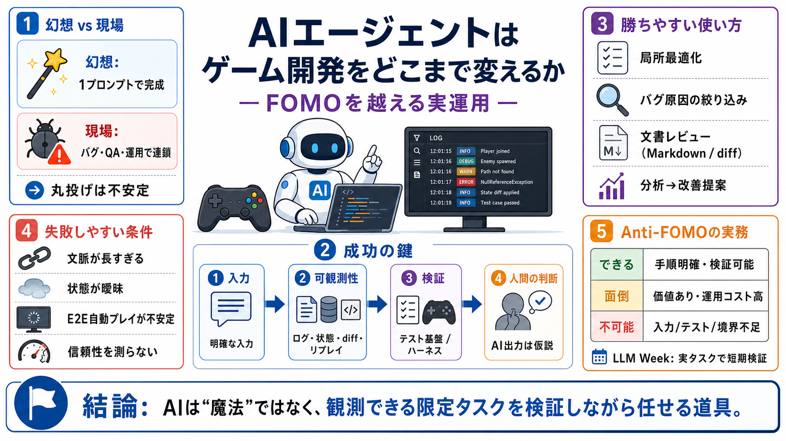

Best AI Coding Agents in 2026: Top Tools by Use Case - Coursiv
Cursor is a low-friction default for an AI-native IDE, Claude Code fits terminal-first supervised engineering, Codex is …

LLM/エージェント導入を“運用品質”で判断する
得意領域と不得意領域があり、体制とアーキ次第で成功率が変わる
1プロンプトで進む→完成に見える
UI/ローディング等の周辺も絡み、見落としが連鎖する
狭い領域の補助（例：局所最適化、レビュー）
文脈を保持できない／入力が曖昧
可観測性（ログ・状態）とハーネス（テスト基盤）
ログ／状態表現／セーブ／リプレイ／diff
原因の絞り込み、判断のブレ低減
局所的最適化、diff/修正提案
バグ原因の絞り込み、観点整理
デザイン文書レビュー、整形/翻訳
SNS動画/ゲーム内イベント分析→改善提案
静的Webサイトの改善（小さく回す）
Markdown化→diff→レビュー
更新の追跡性を上げ、早期にズレを見つける
速度が遅い／不安定
“見えないクリック”等
状態検証（fake input layer）へ
局所最適化／ログ・diff基盤／ハーネスあり
文脈保持が必要な実装丸投げ／状態が曖昧／信頼性測定不足
テスト実行基盤／状態検証／再現性
壊したときの影響が大きい領域は慎重に
手順が明確で検証できる
価値はあるが運用コストが高い
前提（入力/テスト/境界）が欠ける
実タスクで有効範囲を確定する
できる／面倒／不可能（理由付き）
AI出力＝結論ではなく仮説
テスト／データ／権限・責任の設計
ユーザー感情／創作側の懸念
壊したときの影響が大きいほど慎重に
Luden.io（教育系インディーゲーム開発スタジオ）記事：ゲーム開発におけるAIエージェント活用の実地整理（失敗例/成功例、可観測性、テスト戦略、Anti-FOMO/LLM Week）
本デッキ作成にあたり、ユーザー提示の「Summary / Points / FAQ / My opinion」を統合し、見出しごとに1メッセージ化しました。
Cursor is a low-friction default for an AI-native IDE, Claude Code fits terminal-first supervised engineering, Codex is …
C2 logo with stylized orange letter and arrow symbol on a white background. MAVENIR logo with stylized text and underlin…
[35:26 How AI agents & Claude skills work (Clearly Explained)Greg Isenberg 532K views • 2 months ago Live Playlist ()Mix…
Comparison#ai-coding#coding-agents#claude-code#cursor#developer-tools#comparison. # Best AI Coding Agent 2026: Why Top D…
AI in 2026 isn't just about simple prompts; it's about building robust systems with guardrails. In this video, I'll shar…